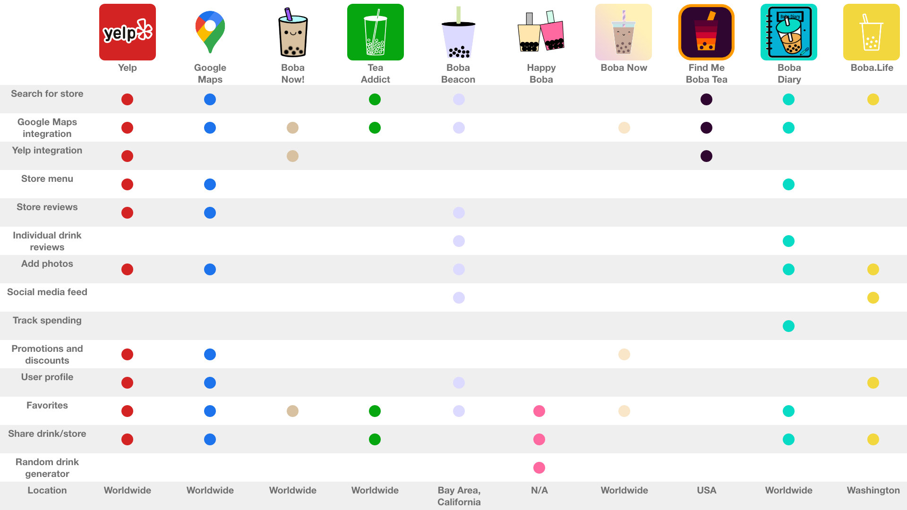
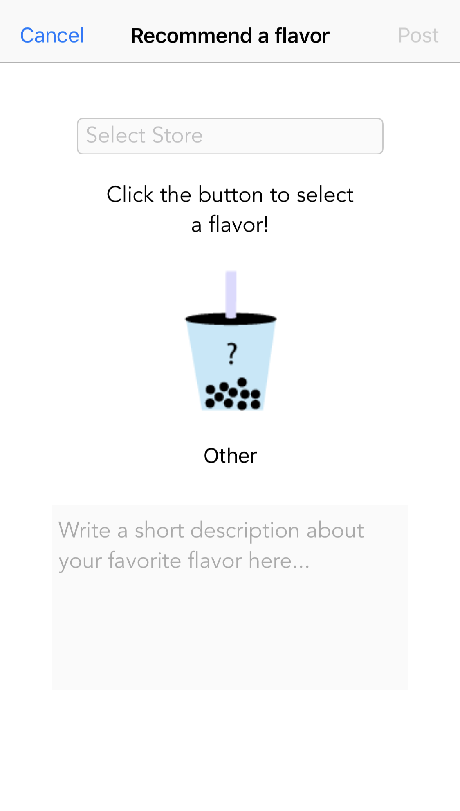
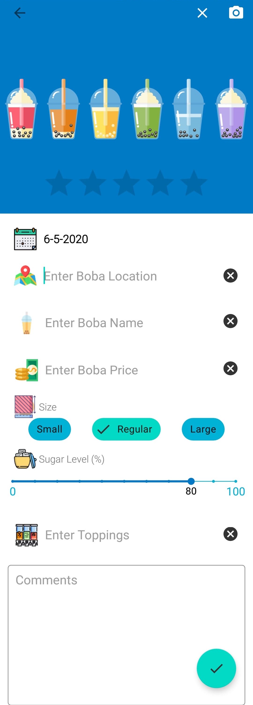
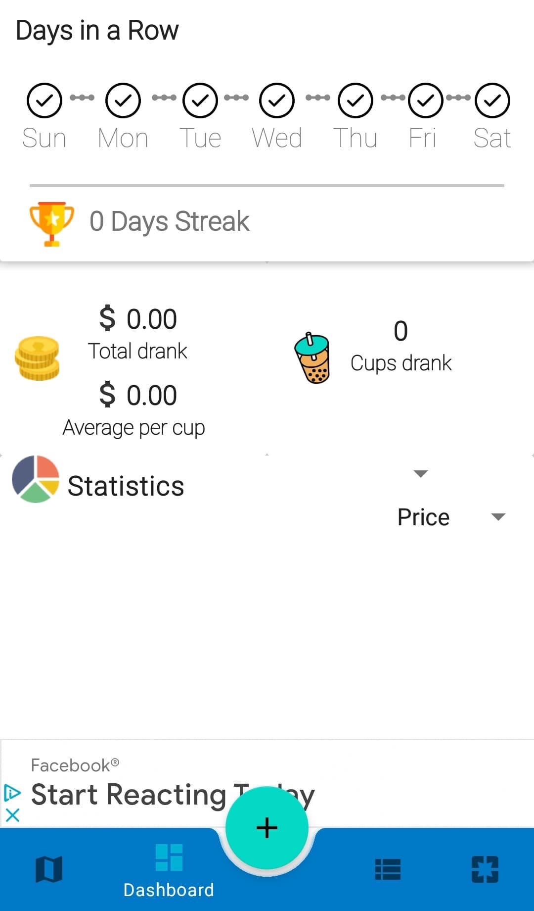
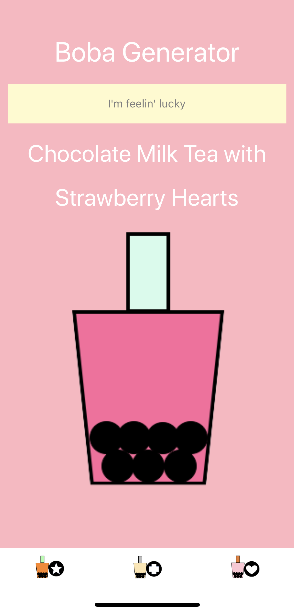
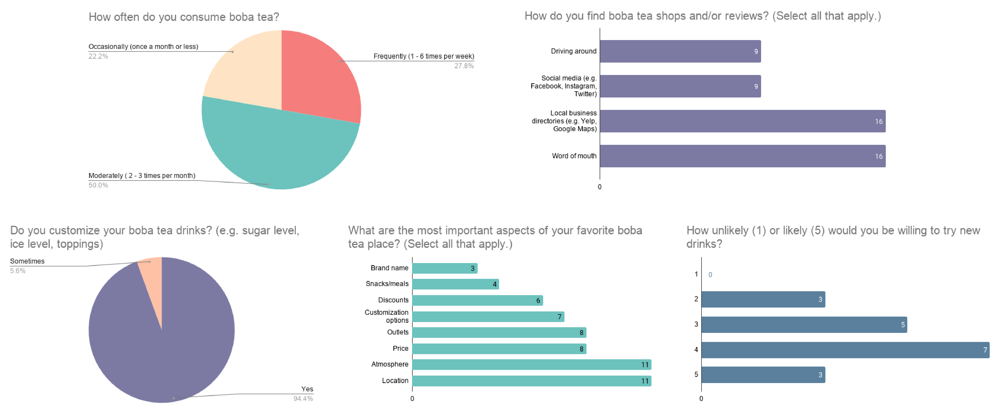

A new way to track your favorite boba tea combinations
If you've ever been in the Dallas area, you've probably seen at least one or two boba tea shops around here. From Kung Fu Tea, Feng Cha, Boba Latte, and many, many others, the boba tea business is booming.
I, a self-proclaimed boba connoisseur, and many other of my fellow boba connoisseurs, can't try out every shop and remember what drinks I like at all of them. Therefore, I wanted to create a platform to compile them in one place.
Create a platform for users to discover, record, and keep up with their boba tea drinks rather than struggling to memorize all their favorite combinations.
UI/UX Designer
Apr 2020 - Present
Ideation, Storyboarding, Wireframing, Usability Testing, Prototyping
Adobe XD, Google Forms
I first thought of the idea when I was creating BobaTeaU during my Internet Studio course when determining some pain points I encountered on a day-to-day basis to create a website. Because I had a pretty bad boba tea addiction during my college career, I started from there. As an avid consumer of boba tea, I frequently went to many places to scout out new drinks. Therefore, I had difficulty remembering if 75% sugar made a drink too sweet or if 25% sugar was sweet enough at one location compared to another.
I realized, after asking an employee "How sweet are your drinks compared to Kung Fu Tea?" and watching them struggle to give me an answer, there was no baseline I could follow. Everybody's taste was different. At that time I also recalled seeing a financing app for boba tea circulating on Facebook called Boba Watch which also inspired me.
Because my Internet Studio course was a class that focused on creating a website on a time limit, I was unable to properly create a mobile version of it. Therefore, I thought of improving the user experience and creating a mobile user interface after I submitted my assignment since it would be easier to record entries on a mobile app as opposed to a desktop computer.
To kick off this project, I did some secondary research to become more familiar with the subject area to have a baseline understanding of the product’s target market and the problems the product could solve, before diving into design. I conducted a competitor analysis to examine boba-related and directory apps in the marketplace.
During my BobaTeaU project, I established that the competitors were aggregate local business directories like Yelp, Google, Trip Advisor, and two apps available on both Google Play and the App Store. This time around, I parsed the stores again for any apps I may have missed. Hint: there are quite a few. In addition, since Trip Advisor was vastly similar to Yelp, I just used Yelp. I kept track of common featuers that popped up for these competitors.
Based on the competitive analysis, none of these apps were direct competitors of what I had in mind, but Boba Diary came the closest. Unfortunately, its UI was very clunky. Google Maps integration and an option to Favorite stores and/or drinks were seen across almost all of the competitors. Most of these products provided local business information and a way to see user reviews for the store, but not for certain drinks.
Boba Diary and Boba Beacon had what I wanted to implement on Bobasaurus -- a way to rate individual drinks. Although, Boba Beacon was a slight stretch since it has limited drink options. Boba Diary also has an area where you can put in how much your drink costed, and it will track your spending is throughout the year or depending on locations.
Boba Beacon: Reviewing a drink
Boba Diary: Reviewing a drink
Boba Diary: Tracking spending
What I also found interesting was the random drink generator on Happy Boba. All users had to do was to press the "I'm feelin' lucky" As intrigued as I was, this feature was limited since there wasn't a way to pool all the drink combinations in the world together.
Happy Boba: Random drink generator
It was a bummer realizing I'm not the first to come up with this idea, but there are certain design aspects I can implement on this product.
Empathizing user voices, I wanted to have data to guide my design choices. Therefore, I began this project by conducting user surveys on Google Forms to determine the target audience who would benefit from using this site. The survey had two main goals:
A total of 18 people responded. The survey consisted of a mix of 9 multiple choice, multiple selection, and short answer response questions. It was posted on my Snapchat and Instagram story with most of my connections being students or alumni from The University of Texas at Dallas. Thus, there might be high bias in the answers.
I also had a free response question asking how participants kept track of the drinks they liked: